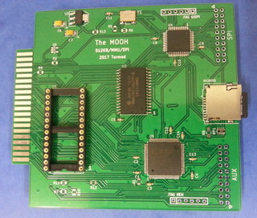

The MOOH - Memory expansion for your Dragon or CoCo 1/2
The MOOH gives your Dragon or CoCo 1/2 a whopping 512 KB of RAM and much more
|  | MOOH
The MOOH is a memory expansion cartridge board for the Dragon 32/64 and CoCo 1/2,
adding 512 KB of RAM and a socket for up to 64 KB ROM.
It also features an SPI interface and an SD-card slot.
|
Ordering and shipping information
The board is currently being made in smaller batches, so there can be some weeks of delivery time. (No payment is taken before the boards are ready to ship).
The MOOH is a cartridge board for the Dragon and CoCo 1/2 featuring:
- 512 KB RAM, handled by a DAT (dynamic address translator) mostly software compatible with the DAT in the Tandy CoCo 3
- SPI interface with 4 slaves, one connected to the micro-SD card slot
- ROM socket for 27C512 type EPROMs (64KB)
The board is designed to allow Dragon and CoCo 1/2 computers to run multitasking operating system such as NitrOS-9 Level-2 and FUZIX, offering virtual address spaces for each process, as well as fast mass storage on SD cards. Other SPI devices can also be connected. The ROM socket acts like a standard cartridge ROM, additionally offering software selection of multiple ROM images. A boot ROM allows the MOOH to be used without the need for any other storage devices or MPI. The "SDBOOT" ROM loads a program or operating system from the SD card on power-on.
- Plugs into the cartridge port - without modification of the computer
- Dimensions 99 x 96 mm (fits inside FD-502 and CoCoSDC enclosures)
- Uses standard micro-SD cards
NitrOS-9
NitrOS-9 is an advanced multi-tasking operating system for 6809-based system, with roots in the original OS-9 in the 1980's. OS-9 Level 2 was originally written for the Tandy CoCo 3 and to take advantage of its 128 KB (or 512 KB when upgraded) of RAM. An experimental port of NitrOS-9 Level 2 for the MOOH is available. Note that programs using the extended graphic modes of the CoCo 3 will not be able to run on your Dragon or CoCo 1/2.FUZIX
FUZIX is a UNIX-like operating system that currently is being developed for a range of 8-bit microcomputer systems from the 1980's. Dragon is a first class citizen in FUZIX land, and is in combination with the MOOH board an excellent platform for this exciting operating system.Other use
Your own machine language programs can access the 512 KB by mapping blocks of 8 KB into the CPU memory space. Potential applications include RAM disks and disk buffers.Please note that the MOOH board does not turn your CoCo 1 or CoCo 2 into a CoCo 3. In addition to the expanded memory unit, the CoCo 3 also has extended graphics modes and interrupt handling. Programs made for the CoCo 3 will not always run on the MOOH, especially those using graphics.
Extras (not sold separately)
 |
SD card for MOOH
This is a standard 16 GB micro SDHC card from Kingston, prepared with example files and utilities to get you going. Includes micro-SD to SD card adapter.
|
 |
SDBOOT boot ROM
The SDBOOT loads a program or operating system from the SD card on power-on.
|
Ordering and shipping information
More information
More information, tips and discussions can be found in the Dragon forums on The MOOH
Instructions on how to prepare SD cards for MOOH.
Dragon software supported
This software can be downloaded for free and is open-source. See the respective web sites for licensing and authorship. There are many contributors, in some cases I am the project maintainer, and/or have written the Dragon port.
Answers
See the FAQ and if that didn't help, contact me at